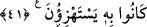
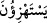
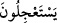
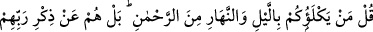
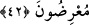

muhabbet bir tarafa, başkalarına verdiğini bile sana vermedi.” dediler. Mecnun: “Esâs
mecnûn, bu sırrı anlamayandır.” diye cevap verdi. Böylece o, kabı kırmanın
ifnâdan/fânî kılmaktan ibâret olduğuna işaret etti.
Bil ki şer’an, aklen ve keşfen ittifak edilmiştir ki insan için bu dünyada ve bu âlemde
hâsıl olmayan her kemâl, onun için ölümden sonra âhiret yurdunda da hâsıl olmaz. Şeyh
Sadreddin
Konevî
(k.s.)’un
el-Fükûk’unda
böyle
denilmektedir.
Bundan
anlaşılmaktadır ki fırsat zamânı bir ganimettir. Ölüm vakti ansızın geldiğinde kişi ne onu
geciktirmeye ne de durumunu düzeltmeye güç yetiremez.
Şeyh Sa‘dî (k.s.) der ki:
Ey kemik kafesi olan insan, haberin var mı?
Canın bir kuştur, onun adı da nefestir
Kuş kafesten uçunca, kaydı bağı kırıldı
Artık senin çaba ve himmetinle o av geri gelmez
Fırsatı ganimet bil, âlem bir nefesten, andan ibarettir
Âlimler nezdinde bir nefes, bir âlemden yeğdir
41. Andolsun, senden önceki peygamberlerle de alay edildi; ama onları alaya
alanları, o alay konusu ettikleri şey kuşatıverdi.
“Andolsun, senden önceki peygamberlerle de alay edildi.” Bu ifâde, inkâr edenlerin
kendisiyle alay etmeleri konusunda Rasûlullah (s.a.)’i tesellî içindir. Yâni, Allâh’a
yemin olsun ki kavminin seninle alay ettiği gibi senin zamânından önce de şânı yüce pek
çok sayıda peygamberle alay edildi de onlar sabrettiler.
“Ama onları” peygamberleri “alaya alanları, o alay konusu ettikleri şey
kuşatıverdi.” Yâni, alaylarının ardından acele istedikleri azab onları kuşatıverdi.
Âyette “
” (alay ettikleri)” ifâdesi, “
” (acele istedikleri) ifâdesi yerine
konulmuştur. Çünkü onların acele istemeleri, alay etmek içindi. Bu, önceki
peygamberlerle alay edenleri yaptıklarının karşılığı kuşattığı gibi, onları da
yaptıklarının kuşatacağına dâir tehdiddir.